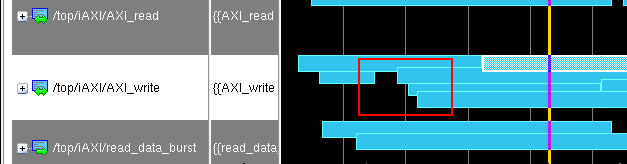

Multiple transactions
recorded on a single stream at one time are known as concurrent
transactions. They appear as overlapping in the Wave window.
An example of the overlapping
of concurrent transactions is shown in Figure 1.
Figure 1. Concurrent Transactions Overlapping in Wave Window